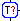
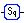

The workflow engine in ADAMS was developed based on experiences with other workflows, like Kepler. The most common approach to workflows is to let the user place operators (or actors in ADAMS/Kepler terms) on a large canvas and then connect the correct inputs and outputs. This approach is probably the most intuitive one, but also the most time-consuming one if a flow contains more than 10-20 actors. Even by combining multiple actors in groups (aka meta-actors, which popup in new window or tab) and providing birds-eye-view of the canvas, this does not solve the problem that the flow quickly becomes unwieldy. Adding new actors usually results in moving around the existing ones and reconnecting inputs and outputs, which is quite time-consuming.
Internally, ADAMS uses a nested structure of actors, i.e., actors are either primitives, that don't nest other actors, or actor handlers, that nest either a fixed or variable number of other actors. This nested structure can be displayed in a compact and easy to navigate tree structure.
To allow the user to concentrate on developing the flow, ADAMS makes the flow of the data implicit by using control actors instead of explicit connections. Control actors usually use a blue frame in their associated icon. In order to make it more apparent, how the data flows, visual cues in form of black vertical or horizontal lines are added to the display.
A Tee actor first forks off the data token into a sub-branch for processing, before passing it on (like the Unix "tee" command). Therefore it uses vertical and horizontal cues. The  conditional Tee, as shown in the snippet on the right, forks off the token only every 25 tokens. The Branch manages an arbitrary number of sub-branches, forwarding the same token to all of them. The visual cue used for its sub-branches is a horizontal line. The  Sequence merely groups several actors together and makes the output of one actor available to the next one as input. It uses vertical lines as visual cues.
Using a tree-structure limits the flow to 1-to-1 and 1-to-n connections, of course. ADAMS uses various approaches to mitigate this shortcoming: